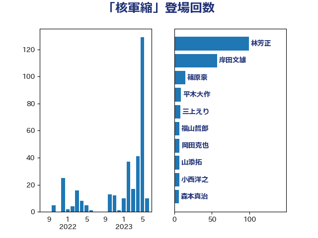

単語「核軍縮」

| 林芳正 | 自由民主党 | 99 回 |
| 岸田文雄 | 自由民主党 | 57 回 |
| 篠原豪 | 立憲民主党 | 15 回 |
| 平木大作 | 公明党 | 9 回 |
| 三上えり | 立憲民主党 | 8 回 |
| 福山哲郎 | 立憲民主党 | 7 回 |
| 岡田克也 | 立憲民主党 | 7 回 |
| 山添拓 | 日本共産党 | 7 回 |
| 小西洋之 | 立憲民主党 | 7 回 |
| 森本真治 | 立憲民主党 | 6 回 |
| 羽田次郎 | 立憲民主党 | 5 回 |
| 山口那津男 | 公明党 | 4 回 |
| 寺田稔 | 自由民主党 | 4 回 |
| 福重隆浩 | 公明党 | 3 回 |
| 猪口邦子 | 自由民主党 | 3 回 |
| 榛葉賀津也 | 国民民主党 | 3 回 |
| 鈴木馨祐 | 自由民主党 | 2 回 |
| 金城泰邦 | 公明党 | 2 回 |
| 道下大樹 | 立憲民主党 | 2 回 |
| 茂木敏充 | 自由民主党 | 2 回 |
| 横沢高徳 | 立憲民主党 | 2 回 |
| 松野博一 | 自由民主党 | 2 回 |
| 松川るい | 自由民主党 | 2 回 |
| 吉良州司 | 無所属 | 2 回 |
| 吉川ゆうみ | 自由民主党 | 2 回 |
| 高橋光男 | 公明党 | 1 回 |
| 高木啓 | 自由民主党 | 1 回 |
| 遠藤良太 | 日本維新の会 | 1 回 |
| 西村智奈美 | 立憲民主党 | 1 回 |
| 笠井亮 | 日本共産党 | 1 回 |
| 石川博崇 | 公明党 | 1 回 |
| 石井正弘 | 自由民主党 | 1 回 |
| 浜地雅一 | 公明党 | 1 回 |
| 泉健太 | 立憲民主党 | 1 回 |
| 櫛渕万里 | れいわ新選組 | 1 回 |
| 梅村聡 | 日本維新の会 | 1 回 |
| 朝日健太郎 | 自由民主党 | 1 回 |
| 徳永久志 | 無所属 | 1 回 |
| 平林晃 | 公明党 | 1 回 |
| 岡本三成 | 公明党 | 1 回 |
| 小池晃 | 日本共産党 | 1 回 |
| 宮口治子 | 立憲民主党 | 1 回 |
| 安江伸夫 | 公明党 | 1 回 |
| 堀井巌 | 自由民主党 | 1 回 |
| 前原誠司 | 国民民主党 | 1 回 |
| 伊藤達也 | 自由民主党 | 1 回 |
| 伊藤信太郎 | 自由民主党 | 1 回 |
| 上川陽子 | 自由民主党 | 1 回 |